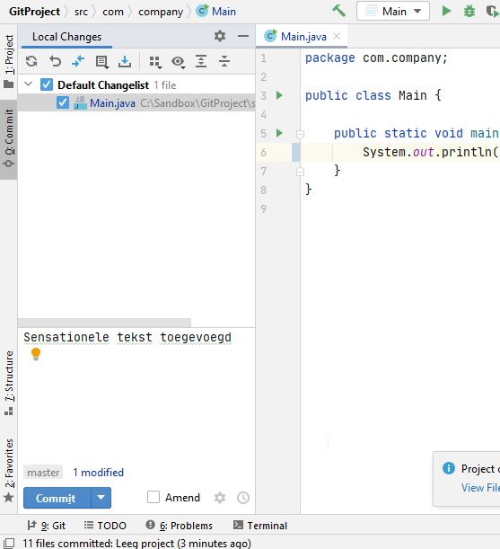

Maak een nieuw java project aan in IntelliJ (Nieuw > next > commandline app > next > geef een naam in > Finish). Je kunt ook een bestaand project van jezelf openen.
Kies in menu VCS "Enable Version Control Integration".
Kies "git" en OK. Na een tijdje meldt IntelliJ dat het gelukt is, linksonderin:
Doe nu je eerste commit.
Git vraagt nu eventueel om je naam en je emailadres. Het maakt niet uit wat je hier invult: dit is de naam en het emailadres waarmee voortaan je commit messages worden "getekend".
IntelliJ geeft onderin weer een melding dat het gelukt is, met je eigen commit message erbij:
Doe nu een wijziging in je code, voeg bijvoorbeeld deze sensationele tekst toe:
System.out.println("Hello world!");
Sla je wijziging op.
Je ziet nu op het "commit" tabje je gewijzigde file verschijnen. Maak je tweede commit door die aan te vinken, weer een commit message in te vullen en druk daarna op "Commit".

Je changelist wordt nu weer leeg.
Je kunt alle commits bekijken die je gedaan hebt, en verschillen tussen bestanden, via het "log" tabje van het "git venster":